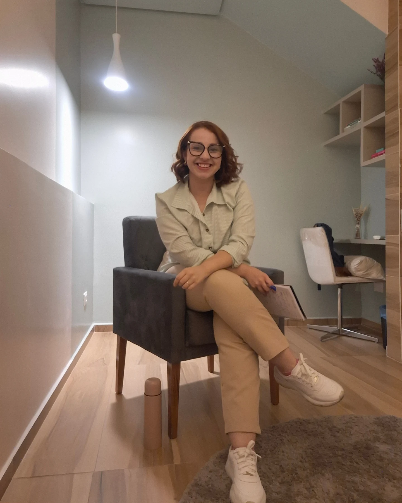

01
Acolhimento
Um espaço seguro para falar sobre o que você sente e vive, com respeito à sua história.
A psicoterapia pode ser um caminho de escuta, reflexão e fortalecimento emocional. Aqui, cada atendimento é pensado com sensibilidade, ética e respeito à singularidade de cada pessoa.

Psicóloga • CRP 02/24493
Um cuidado humano para diferentes momentos da vida.O seu tempo. A sua história. O seu processo.
Bárbara Rodrigues · CRP 02/24493Sou Bárbara Rodrigues, psicóloga registrada sob o CRP 02/24493. Acredito na psicoterapia como um espaço de cuidado, presença e escuta, onde cada pessoa pode elaborar suas vivências com acolhimento e sem julgamentos.
Meu compromisso é oferecer um ambiente ético e sensível, no qual você se sinta à vontade para falar sobre emoções, relações, desafios e processos pessoais no seu próprio ritmo.
A psicoterapia é um espaço de escuta profissional que pode contribuir para o autoconhecimento, elaboração emocional e desenvolvimento de novas possibilidades diante da vida.
Um espaço seguro para falar sobre o que você sente e vive, com respeito à sua história.
Tempo e atenção para compreender emoções, pensamentos, relações e desafios do cotidiano.
Cada pessoa possui um ritmo próprio, e o acompanhamento respeita essa singularidade.
O espaço foi pensado para proporcionar conforto, privacidade e serenidade, favorecendo a escuta e a construção de um vínculo terapêutico cuidadoso.
Um espaço reservado para as suas conversas.
Um momento para falar com liberdade e respeito.
Atenção à sua história e ao seu ritmo.
Conheça a psicóloga Bárbara Rodrigues em um breve vídeo de apresentação.
Veja como funcionaria a área de contato e solicitação de agendamento em um site profissional.
Este site é uma amostra de layout, navegação, apresentação da profissional, fotografia, vídeo e experiência de agendamento. As funções de contato são ilustrativas e não realizam atendimentos reais.
Em um site publicado para atendimento, este botão pode direcionar o visitante ao WhatsApp da profissional com uma mensagem de consulta pronta.
Nenhuma mensagem será enviada. Esta página é um modelo de portfólio, não um canal oficial de agendamento.